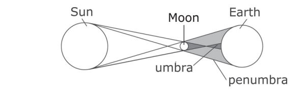
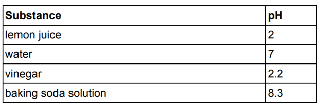

A solar eclipse is a celestial event during which the Sun appears partially or totally obstructed when viewed from a certain location on Earth. The diagram below shows a solar eclipse.
The gene for a dominant trait is always expressed when present. An individual may have only a dominant gene and have two copies of that gene, or an individual may be hybrid and have one dominant gene and one recessive gene. In hybrids, the dominant gene hides the expression of the recessive gene. A recessive gene is expressed only when both copies of the gene are recessive.
Dimples result from a dominant gene, and a lack of dimples results from a recessive gene.
Whether a substance is classified as acidic, basic, or neutral is determined by its pH. A pH below 7 is acidic, a pH of 7 is neutral, and a pH above 7 is basic. Below is a table of common substances and their pH values.
A geode is a rock that appears dull on the outside but is filled with crystals inside. Many scientists theorize that some round geodes are formed when lava bubbles as it cools after a volcanic eruption. Minerals and water seep into the bubbles, and after the water evaporates, the minerals form crystals.
A scientist wishes to determine whether using compost and nitrogen-rich fertilizer together will be more effective than using either alone. She hypothesizes that if she uses a combination of compost and nitrogen-rich fertilizer, then the plants that she grows will be taller and will grow more abundantly than they would if she used either independently. To test her hypothesis, the scientist designs an experiment using groups of plants, with each group receiving different treatment, and with each group monitored and measured.
A student has a wagon of a certain mass. He plans to investigate how the acceleration of the wagon changes as the force he exerts on it increases.
A group of college students were given a short course in speed-reading. The instructor was curious about what would influence performance on a reading test taken at the end of the course. Half the students were offered $5 for obtaining a certain level of performance on the test, the other half were not offered money.
Thomas Young's Wave Theory of Light
Thomas Young was an English physician, and was known as a person of great knowledge on many subjects. Young made notable scientific contributions to the fields of vision, light, solid mechanics, energy, physiology, language, musical harmony, and Egyptology.
In Young's own judgment, his most important achievement was to establish the wave theory of light. To do so, he had to overcome the century-old view, expressed by Isaac Newton, that light is a particle. In the early-19th century Young put forth a number of reasons supporting the wave theory of light, and he developed two demonstrations to support this viewpoint. With the ripple tank, he demonstrated the idea of interference in the context of water waves. With Young's interference experiment or double-slit experiment, he demonstrated interference in the context of light as a wave.
The double-slit experiment was first performed by Thomas Young in 1801. He believed it demonstrated that the wave theory of light was correct, and his experiment is sometimes referred to as Young's experiment or Young's slits.
"The experiments I am about to relate ... may be repeated with great ease, whenever the sun shines, and without any other apparatus than is at hand to every one", is how Thomas Young, speaking in 1803 to the Royal Society of London, began his description of the historic experiment. His talk was published in the following year's Philosophical Transactions and was destined to become a classic, still reprinted and read today.
In a paper published in 1804, Young described an experiment in which he placed a narrow card (approximately 1/30th inch) in a beam of light from a single opening in a window and observed the fringes of color in the shadow and to the sides of the card. He observed that placing another card before or after the narrow strip so as to prevent light from the beam from striking one of its edges caused the fringes to disappear. This supported the contention that light is composed of waves. He later gave credit to Grimaldi for first observing the fringes in the shadow of an object placed in a beam of light. Within ten years, much of Young's work was reproduced and then extended by Fresnel.
In biology, cell theory is the historic scientific theory, now universally accepted, that living organisms are made up of cells. Cells are the basic unit of structure in all organisms and also the basic unit of reproduction. The three principles of the cell theory are as described below:
Georgia wants to design an investigation to demonstrate the first principle of Cell Theory.
Consider the following situation:
Hector wanted to make pasta on the stove. He put 600 mL of water in a pot and brought it to a boil. He put the pasta in the pot and then accidently forgot about it. When he checked his pot 30 minutes later, only 450 mL of water remained.
1. Based on the information in the graphic, which of the following is mostly likely to be true during a solar eclipse?
2. Which of the following is correct?
3. Based on the information on the left, what percent of the substances in the table are basic? You may use a calculator.
4. Which of the following best supports the theory discussed above?
5. What is the minimum number of groups of plants that the experiment will require?
6. In his investigation, the independent variable is:
7. What is the hypothesis?
8. Which statement from the passage best supports Young’s hypothesis that light is composed of waves?
9. Which of the following best describes what Georgia should consider when choosing organisms to use in her investigation?
10. What happened to the missing 150 mL of water?